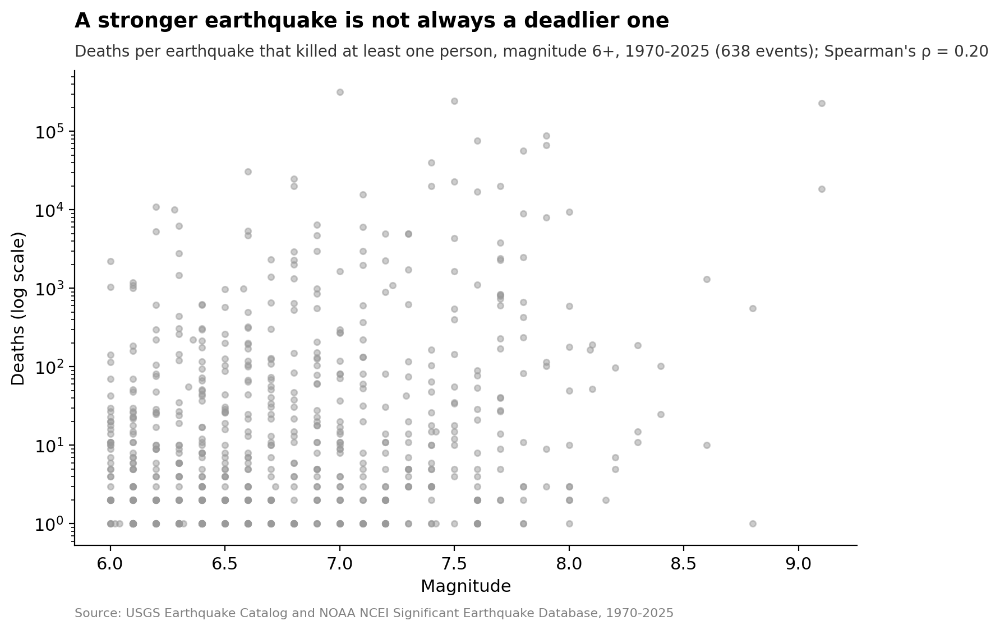
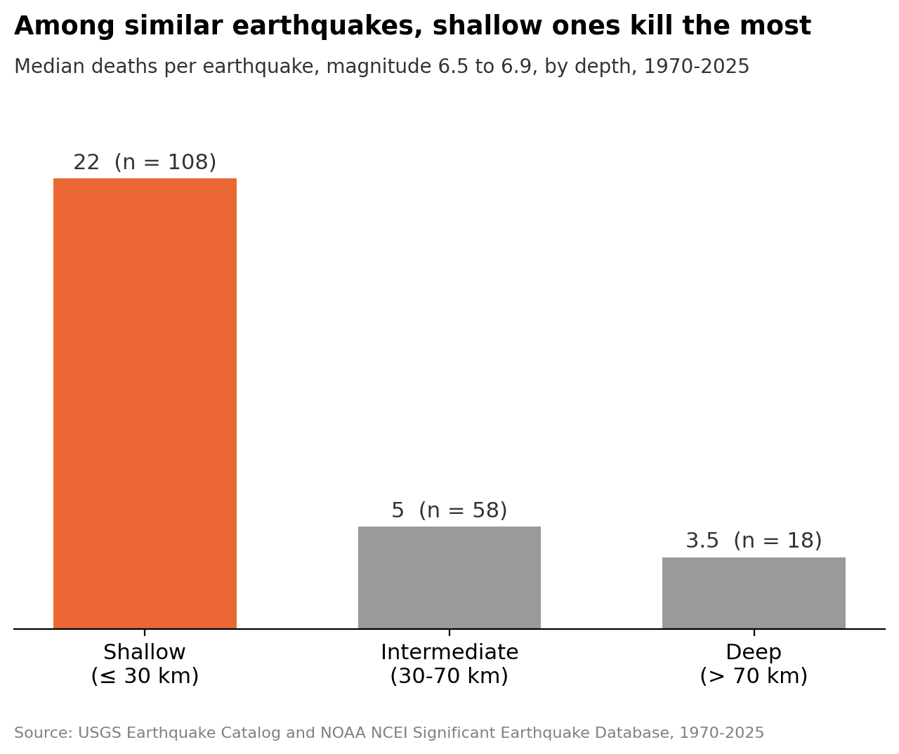

Work in progress (data and EDA checkpoint). The full story will be published here in December.

Takeaway: deaths rise only weakly with magnitude (Spearman's ρ = 0.20). Earthquakes of magnitude 6 have killed thousands, while some of magnitude 8.5 killed only a few.
We matched 1,322 significant earthquakes from NOAA with the USGS catalog; 638 of them killed at least one person. NOAA never records a death toll of zero, so this chart only shows earthquakes with at least one recorded death. The cloud of points barely rises with magnitude, which is why we do not treat deaths as a function of magnitude alone.

Takeaway: for earthquakes of magnitude 6.5 to 6.9, the median shallow earthquake killed 22 people, about six times as many as a deep one (3.5).
Keeping magnitude almost fixed lets us see what else matters. Depth is one factor; the country is another: in the same magnitude range, the median death toll was 653 in Türkiye but 17.5 in Japan. These country figures rest on only 3 to 16 earthquakes each, so we will read them with care.
When USGS cannot measure the depth of an earthquake, it often sets it to 10 or 33 km. To check that this does not create our result, we removed those earthquakes: the median shallow earthquake still killed 16 people, against 4 and 3.5 for the deeper groups.